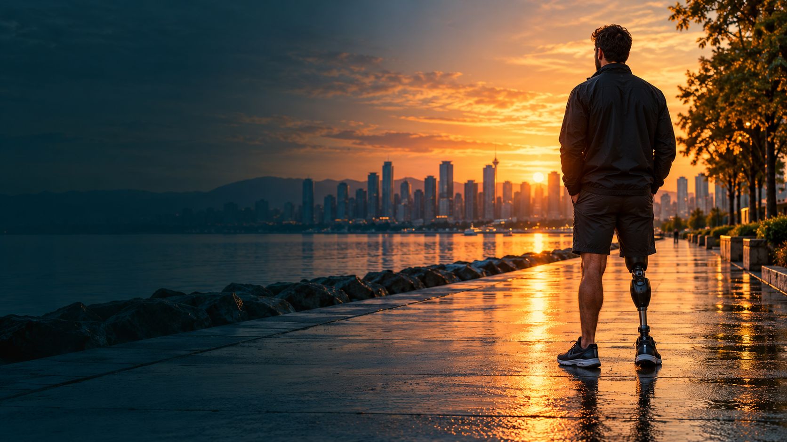
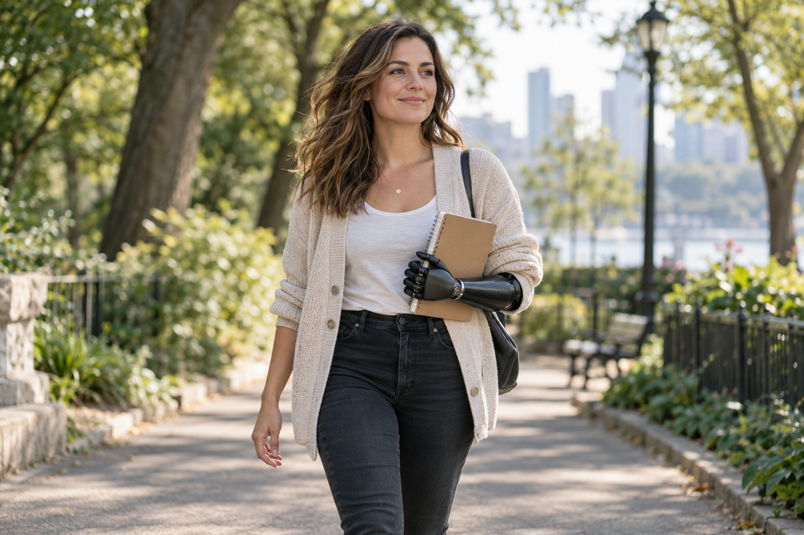
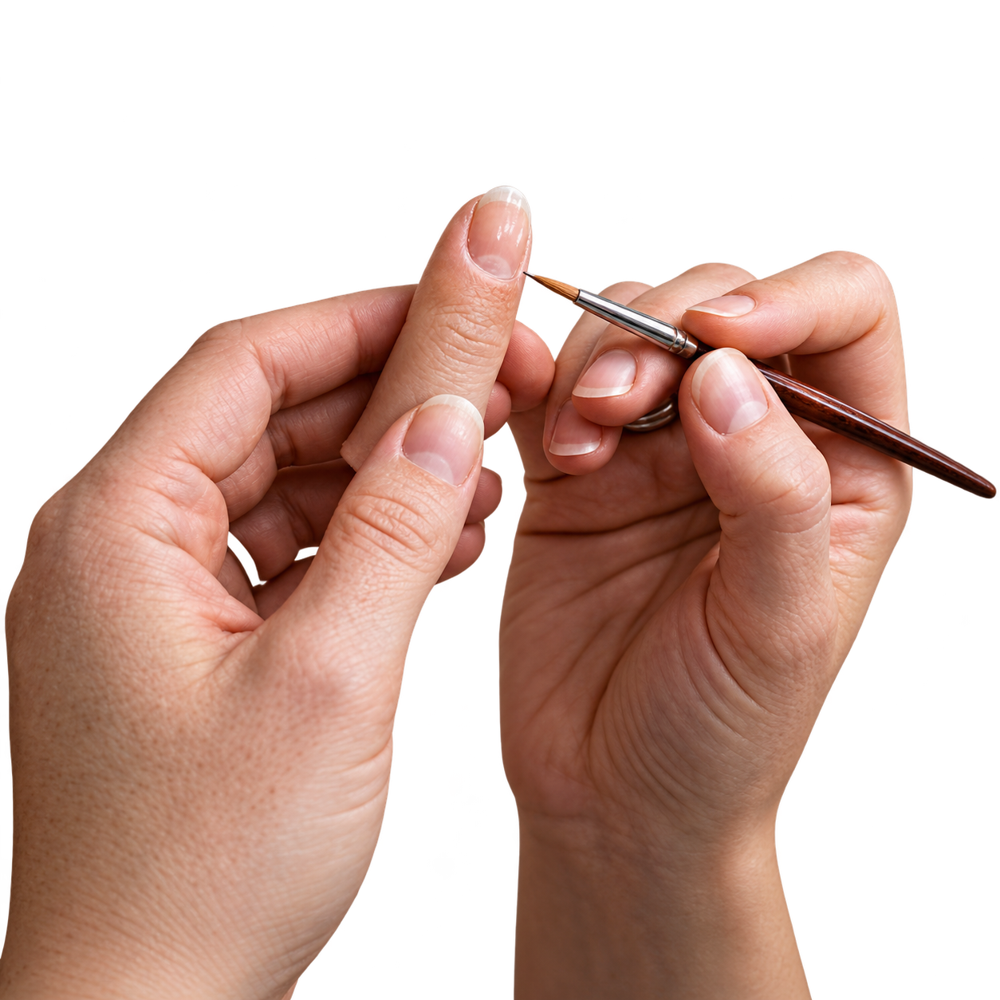

Направления

С какой ситуацией вы к нам пришли?
Выберите направление — дальше покажем варианты именно под вашу ситуацию.

Протезы нижних конечностей
Бедро, голень, стопа. Модульные, купальные и с микропроцессорным управлением.
Подобрать решение →
Протезы верхних конечностей
Кисть, предплечье, плечо и пальцы. Косметические, рабочие, активные и бионические.
Подобрать решение →
Косметические пальцы
Индивидуальные косметические протезы пальцев с подбором формы, цвета и детализации.
Посмотреть варианты →Каталог продукции ТСР
Технические средства реабилитации. структура каталога требует наполнения
Открыть каталог →Не знаете, какое решение вам подходит?
Поможем разобраться и подобрать следующий шаг.